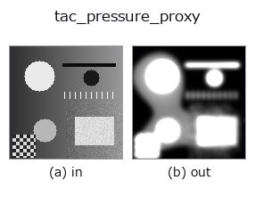

tactile op• Datenarten: image → image
• Aufruf: fullseye.apply(img, "tac_pressure_proxy", a=0.5, b=0.5) (das 2-D-Modell ist ein Bild plus zwei skalare Regler a,b∈[0,1])

*Die Abbildung ist die tatsächliche Ausgabe auf einer synthetischen 128×128-Eingabe. Links Eingabe, rechts Ausgabe. Punktwolken als Draufsicht-Streudiagramm (Helligkeit = z), 1-D-Reihen als Linie, Volumen als Maximum-Projektion entlang z, Videos als mittleres Bild, komplexe Bilder als Betrag; Rückgabewerte, die kein Bild ergeben, werden als Werte gezeigt.*
Regler a durchfahren (0,1 / 0,5 / 0,9, der andere Regler auf Standard):
▸ tac_pressure_proxy: knob a sweep (docs site)
Regler b durchfahren (0,1 / 0,5 / 0,9, der andere Regler auf Standard):
▸ tac_pressure_proxy: knob b sweep (docs site)
Auf anderen Bildern (synthetische Szene / Foto / Münzen. Obere Reihe: Eingaben, untere Reihe: deren Ausgaben. Regler auf Standard):
▸ tac_pressure_proxy: other inputs (docs site)
*Die 4. Spalte ist eine Farb-Eingabe (H,W,3). Dieser Op verarbeitet Farbe, ohne Kanäle zu vermischen (er faltet den Farbkanal nicht als dritte Raumachse).*
Kontaktdruck-Näherungskarte: Die gleichgerichtete Abweichung vom Pseudo-Referenz-Hintergrund `dev = |v - G_sigma(v)| wird auf den Bereich hoher Abweichung (Kontakt) begrenzt -- ein relatives Gate bei 0.15 * max(dev) plus eine absolute Untergrenze von 0,005 --, mit der Empfindlichkeitsverstärkung verstärkt und gaußgeglättet; dies ist der Standard-Ersatzwert „Eindrucktiefe ist monoton zur Normalkraft“, der verwendet wird, wenn ein taktiles Pad keinen Kraftsensor besitzt. a = Empfindlichkeit (Verstärkung 1..10-fach), b` = Glättungsradius (Sigma 0,5..4,5). Ausgabe auf [0,1] begrenzt, HxW; ein flacher Frame ergibt eine durchweg nullwertige Druckkarte (kein Kontakt, keine Kraft).
• Katalog der Beispieldaten (Download-URLs / Lizenzen) — 2-D nutzt skimage.data (BSD/Public Domain) plus synthetische Bilder, 3-D nennt Download-URLs echter Datenquellen (Stanford, PDS, …).
• Herkunft und Literatur der Operatoren — die Quellen der Forschung/Verfahren, auf denen diese Operatorfamilie beruht.
Das Programm unten ist nachweislich lauffähig (gleiche Eingabe wie die Abbildung). In der Studio-Hilfe wird dieser Block zu Schaltflächen, die es sofort laden und ausführen.
tac_pressure_proxy 0.50 0.50
▸ Load this pipeline · Load & run
• sim2real_and_alife — py -3.11 examples/sim2real_and_alife.py
image als Eingabe)identity · gaussian · mean_box · bilateral · unsharp · median · min_filter · max_filter
tactile)tac_contact_mask · tac_height_from_shading · tac_surface_normal · tac_shear_field
*Provenance: ops.py — 2D Operator-Registry. Diese Notiz wird von tools/opdocs.py md erzeugt (nicht von Hand bearbeiten).*
© 2026 Kazufumi Furuse — Fullseye operator documentation. Licensed under Apache-2.0.
{kind=link}
{kind=link}
{kind=link}